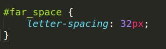
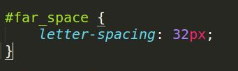
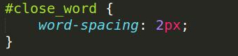
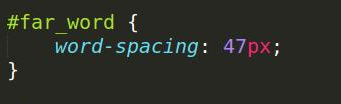
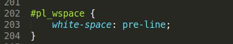
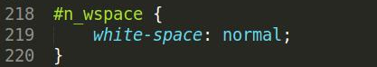
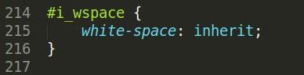

text
text
text
text
text
Overline
Vertical Shadow
Line-through
bidi-override rtl direction
Horizontal Shadow
Underline

This is aligned on the left.
This is aligned in the center.
This is aligned on the right.
This is justified, so each line is stretched to have equal width.

These lines have a height of 150px. Line height can be defined in the usual measures such as px, pt, cm, etc.
These lines are defined as 50% of the font size. Other value options include inherit, initial, and normal.
These line height are defined as a number (2), where the number is multiplied by the font size.
This line is indented 75% in respect to its parent element.
This line is indented 20px from the left.
This line is indented 200px from the left.
Vertical align allows you to define superscripts and subscripts.
This is using the 'top' value.
This is using the 'bottom' value.
LETTERSPACINGISIMPORTANT
 

AS ISWORD SPACING
 And when there is no wrapping the whitespace, the text will just keep going and going and going and going and going and going and going and going and going and going and going

This differs from all other white space manipulators, like pre-line whitespace. The others will all cut off the line at the browser's discretion, or when there is a line break. Except for pre.
The pre whitespace value will have the text only wrap on
line breaks

When using pre-wrap whitespace, whitespace is preserved by the browser. The text will wrap when necessary, and
on line breaks.
When using normal whitespace, sequences of whitespace will collapse into a single whitespace. The text will wrap when necessary. You don't even have to declare this one, it's the default!
The text can also inherit whitespace from the parent. Right now it's inheriting normal whitespace as there is no defined value in the parent.
